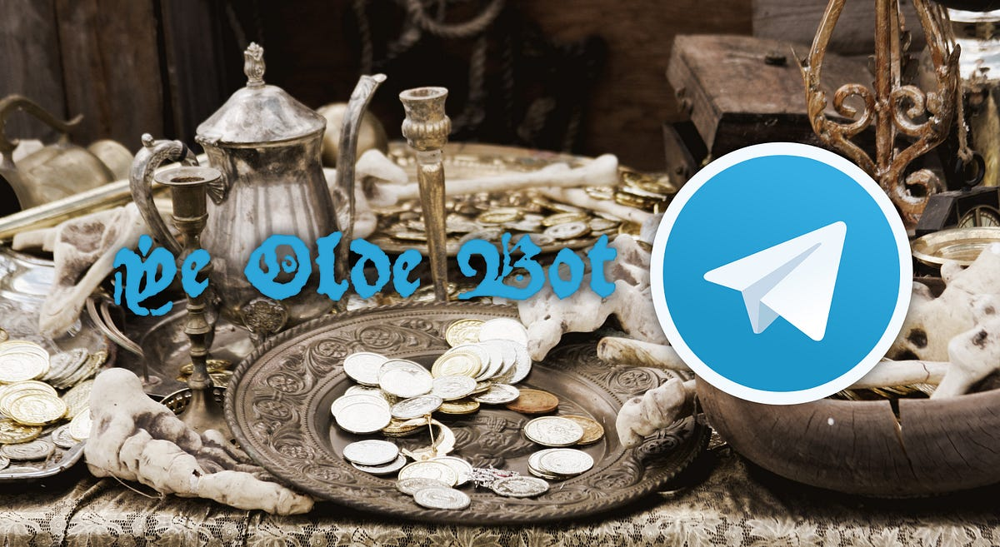
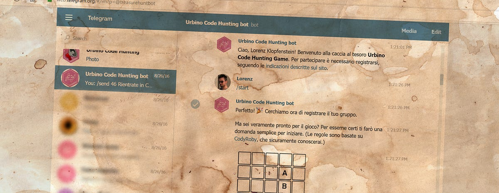
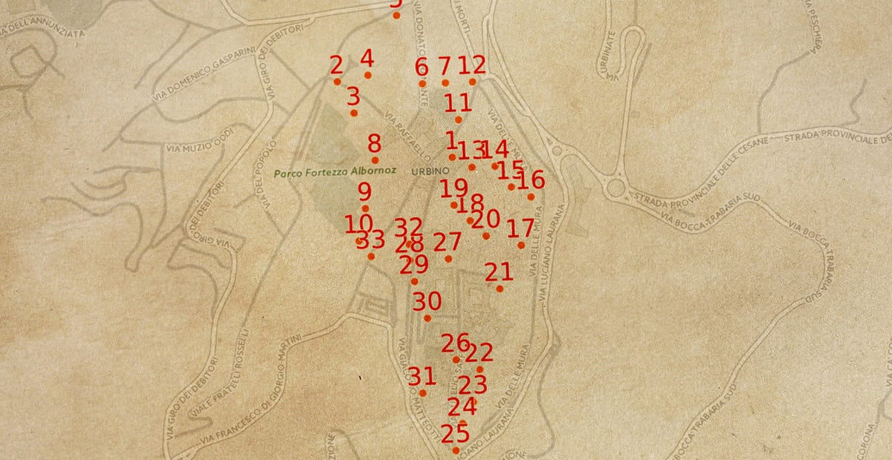
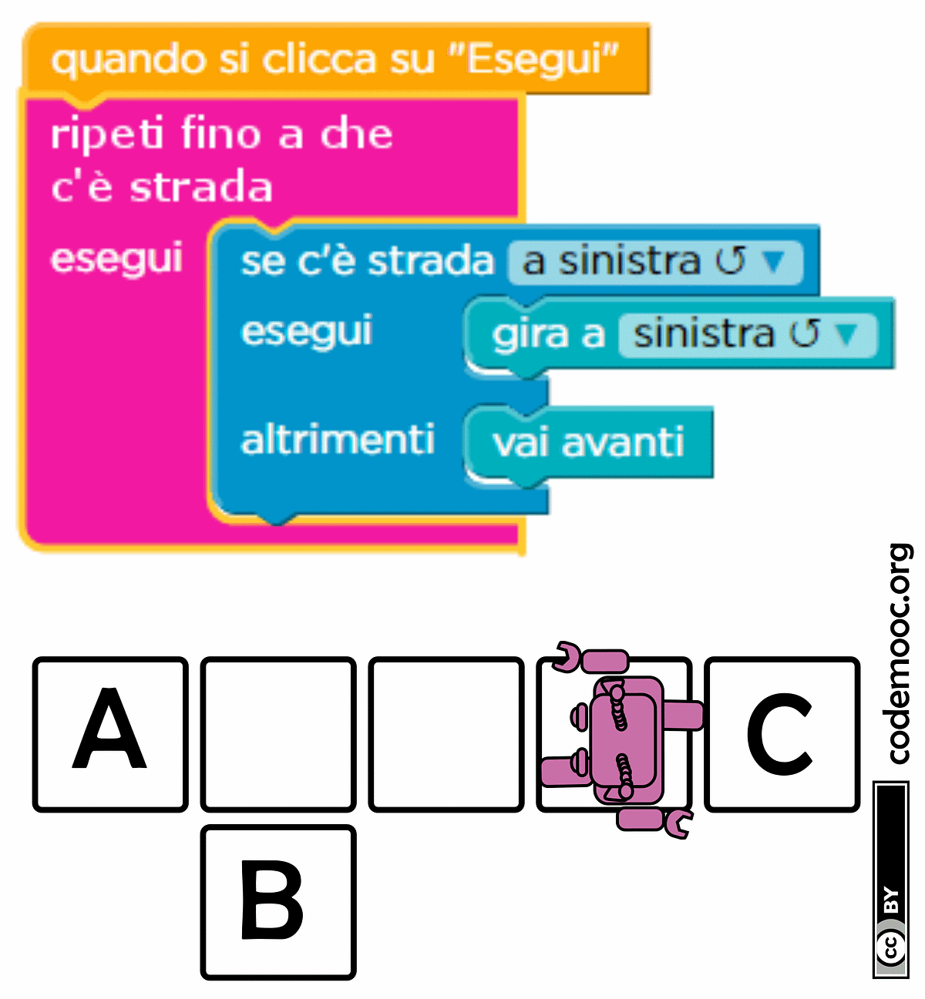
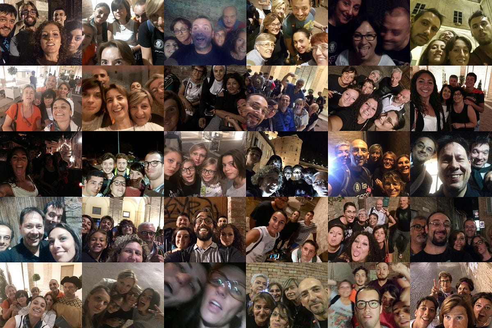

Implementing a bot-based treasure hunt game

On August 26th, during the course of the “Coding in your Classroom, Now!” summer school, a large treasure hunt game took place in the historical center of Urbino: 26 teams, composed of 139 participants overall, challenged each other by chasing clues through the narrow and steep streets of the city, following the orders of a… bot.
The game had been developed during the week just before the event and the whole team behind the treasure hunt spent the last minutes before the start feverishly fixing the last bugs.
(Well, most of them.)
The summer school, aimed at school teachers of all grades, had the main focus of bringing coding to the classroom, in a way that could be engaging for both teachers and young students. Thus, it made more than sense that the treasure hunt itself, “Urbino Code Hunting” as it was called, would be based on coding puzzles as well.

What made the treasure hunt interesting is that the whole registration process, the actual hunting, puzzling, and other game mechanics were directly handled by a Telegram bot. Anyone with a Telegram account could very easily register during the 4 days before the game just by entering a conversation with it.
Registrations to the game were handled by a run of the mill conversation with the bot.
The bot asked registrants to solve a “preliminary” puzzle (to prepare players for what would have come later and to work as some kind of captcha), how many other participants would have taken part to the game together with the team leader, and the team’s name.
Gameplay
Usually a treasure hunt game requires players to find hidden objects or reach secret locations based on some — more or less vague — clues. In our case, the actual puzzling was centered around coding questions delivered by the bot, not around recognizing locations from clues, both because coding was the theme of the game and because many participants weren’t familiar with the city. Therefore, locations to reach were given out explicitly by the bot.
The actual gameplay was structured as follows:
- Each group gets a random location to reach (sent as a precise geographical location and rendered as a point on a map).
- On reaching its assigned location, the group snaps a selfie and sends it to the bot.
- The bot picks one of the coding puzzles and waits for the group’s answer. A minimum delay of 1 minute between attempts is required.
- If the solution is correct, the bot gives out a new clue for the final puzzle.
- Go to 1.
Location, location, location

We identified 30 well-distributed locations around the town, which we marked with a description, a precise GPS location, a numeric ID, and a secret code (16 random alphanumeric characters).
Each location had its own secret 16-character code.
How did the bot ensure that a group has reached its destination? Easy. We printed 30 paper signs (on A4 sheets), one for each location, with a special QR Code linking to an URL following this scheme:
https://telegram.me/treasurehuntbot?start=0123456789ABCDEF
This link makes use of the deep linking feature of Telegram: after opening the URL through a QR Code scanner, the user’s phone automatically starts the Telegram client and sends the “/start 0123456789ABCDEF” string to our bot, without actually displaying it inside the conversation screen. Since each QR Code contained the location’s secret 16-character code inside the URL, the bot would know with certainty which code the group had scanned and thus which location was reached.
The bot tracked each group making its way through a sequence of 12 locations. To ensure that groups of players do not follow each other and that they don’t cluster in the same area, the sequence of locations to reach for each group was chosen at random.
In order to ensure fairness, sequences of locations were generated beforehand with a bounded maximum (and minimum) length.
Puzzling
Puzzles — which were given out as soon as a group reached a location and sent a confirmation selfie of the group — were based on the CodyRoby quizzes . These simple logical puzzles make use of shared conventions, like the colored pseudo-code blocks from Blockly used in Code.org and the CodyRoby coding cards.

All puzzles required at most a couple of minutes to be solved and the answer could be provided as a simple text message, usually with a single character or a single number. Answers would be accepted quite liberally, with whitespace, in upper or lower case, and with any formatting. Wrong answers caused a forced delay of 60 seconds before the next attempt.
Correct answers not only let the group move forward, but they also rewarded the group with an important clue that would then be used to solve the last riddle: as soon as a group reached the last location (which we made sure was the same for all groups), they were given a map (like, a real, tangible, honest to goodness map made out of paper) that could be used to find out the exact place where the coveted prize was hidden.
The first group that reached it would get to keep the prize and receive another wonderful QR Code. Who doesn’t love QR Codes anyway? This last code signaled that the game was over for everyone.
A Telegram channel was used to broadcast information, to share selfies, and to make the game more engaging.
The Urbino Code Hunting Telegram channel was created on the day of the game and all participants were invited to subscribe to it. Major advancements of the groups were broadcast on the channel, along with all selfies taken by the groups as soon as they were sent in from the various locations. The channel gave the participants and us a way to monitor the state of the game, thus making it more engaging as the groups got closer to their final destination.

The bot was powered by a PHP application and a MySQL database, patched together in less than a week.
The source code has been published on Github under the MIT license if you want to take a look. At the moment, deploying the bot for your own backyard treasure hunt might not be the easiest of tasks, but we are already planning to make it reusable at will.
(And we have other significant — and scary? — plans for the future…)
This post was first published on the blog of the Applied Computer Science course at the University of Urbino.